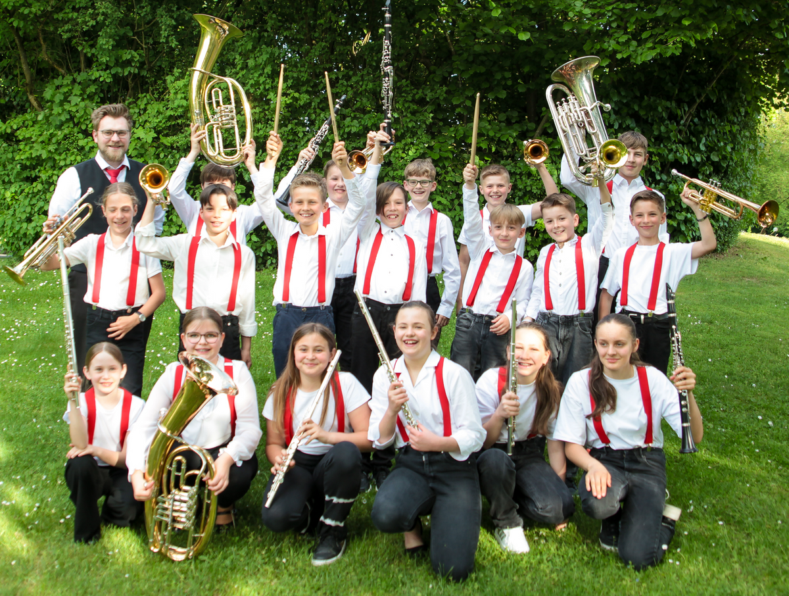

Die JUBO-Minis
Die Minis sind die Nachwuchsgruppe des Musikvereins Bad Füssing. Hier sammeln junge Musikerinnen und Musiker Erfahrung im Zusammenspiel.

Über die Minis
Ein Instrument zu lernen ist ein Anfang. Es gemeinsam mit anderen zu spielen eröffnet eine neue Welt. In unserer Nachwuchsgruppe sammeln junge Musikerinnen und Musiker Erfahrung im Ensemble.
Die Minis bilden die Brücke zwischen dem Einstieg am Instrument und dem JUBO. Unter der Leitung von Maximilian Lindmeier wächst die Gruppe musikalisch zusammen.
Zusammenspiel
Im gemeinsamen Spiel lernen die Minis, wie die eigene Stimme zu den anderen Instrumenten passt.
Ensembleerfahrung
Aus einzelnen Übeschritten werden Erfahrungen, die alle miteinander teilen.
Übergang ins JUBO
Die Arbeit im Ensemble bereitet den Weg zum Mitspielen im JUBO.
Proben und Termine
Unsere gemeinsame Probe
Donnerstags · 17:30–19:00 Uhr
Probenraum an der Kurgymnastikhalle
Bad Füssing
Für einzelne Auftritte, Ferienregelungen oder Änderungen erkundige dich bitte direkt beim Verein.
Zu den öffentlichen VereinsterminenBei den Minis mitmachen
Dein Kind spielt bereits ein Instrument und möchte gemeinsam mit anderen musizieren? Schreib uns, welches Instrument es lernt und welche musikalische Erfahrung es mitbringt. Wir besprechen mit euch, ob die Minis der passende nächste Schritt sind.
Wenn ihr gerade erst mit dem Instrument beginnen möchtet, findet ihr bei unserer Bläserklasse und musikalischen Ausbildung den passenden Ansprechpartner.
Die Minis kennenlernen Erst ein Instrument lernen